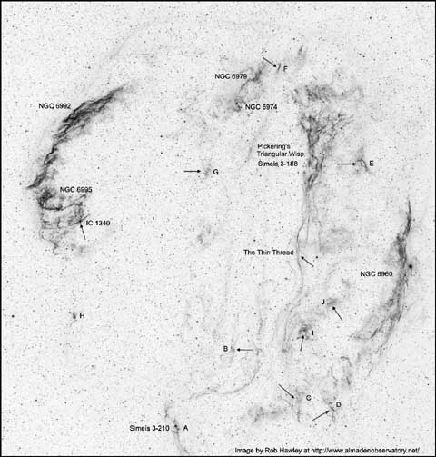

The Veil Nebula is a showpiece supernova remnant in Cygnus with
three main sections forming a ragged cosmic wreath spanning three degrees in diameter. Distance estimates have traditionally placed the Veil at 2500 light years or more, but recent research
using the HST and the Far-Ultraviolet Spectroscopic Explorer (FUSE) confirm a nearer distance of 1500 light years. These results have dropped the estimated age from 30,000 years to less
than 10,000 years old.
Before the availability of nebula filters in the late 1970's, the Veil Nebula was generally considered a challenge object in amateur telescopes. But in a dark sky, the Veil Nebula is
arguably the most spectacular telescopic object in the northern sky, using a narrowband or OIII filter and a modern wide-field eyepiece.
Even with my 15x50 binoculars equipped with UHC filters, the entire eastern arc (
William Herschel discovered the eastern section of the Veil Nebula (NGC 6992) on September 5th 1783. He described "branching nebulosity, extending in RA nearly 1.5 degrees and in PD [polar distance) 52'. The following part divides into several streams uniting again towards the south." Just two nights later he returned to this region and discovered the western section of the Veil Nebula (NGC 6960), which he described as "extended; passes through kappa (52) Cygni. By the Newtonian view above 1 degree length. By the Front-view [no secondary] near 2 degrees length."
William's son John Herschel first described the feathery side wisps at the southern end of the eastern section (
Williamina Fleming discovered Pickering's Triangular Wisp (aka Pickering's Wedge) while examining photographic plates taken at Harvard Observatory in 1904. Credit, though, went to Edward Charles Pickering, the director of the observatory. This 45' triangular wisp is widest and split at the northern end and displays much of the same filamentary, kinky structure as its brighter two counterparts. A very thin thread of nebulosity continues south quite a distance.
The September 2011 issue of Sky & Telescope has an article on the Veil Nebula by Alan Whitman that highlights several of the lesser-known isolated filaments and patches that show up on images but are generally not plotted on star atlases. On August 2nd and 3rd 2011, I explored all of these regions and a few not mentioned from 7200 ft Packer Saddle, in the Sierra Buttes. In the descriptions below I've followed Alan's letter designations for objects A through H and added objects I and J.
I've also included descriptions for Pickering's Triangular Wisp as well as
NGC 6974
20 51 04 +31 49.7
Size 4'x2.5'
Although the NGC position (from the 4th Earl of Rosse) is 74' further south in an empty section of the Veil, this number is generally applied to the SE end of the 25' section of nebulosity
between the north end of Pickering's Triangular Wisp and the north end of NGC 6992/5 (eastern section of the Veil). This patch is roughly 4'x2.5' in size and contains three brighter stars.
A thread of nebulosity extends NW and then spreads out at the NW end (see N6979). Extremely faint haze extends at least 20' SE towards a slightly brighter patch (see notes on section
G).
20 50 28 +32 01.6
Size 5'x3'
This number is generally applied to the NW end of a fairly faint 20'x4' section of the Veil, located the NE of the northern end of Pickering's Triangular Wisp. The NW end is roughly 5'x3'
and involves a few stars including a couple on the SW side and a couple on the north side. An isolated filament (section "F") oriented NNW-SSE is situated 10' ENE of N6979. To the south of
N6979 the nebulosity thins and a faint thread extends to the SE before spreading out again on the SE end (see N6974), about 15' from N6979.
Pickering's Triangular Wisp = Simeis 3-188
20 48 32 +31 31 38
Size 45'x30'
Using 108x and an OIII filter, the main triangular wedge extends nearly 50' and displays a remarkable amount of filamentary structure with a number of long, thin, high surface brightness
wisps extending in a number of different directions. Some filaments merge and others appear to crisscross. The northern end display prominent filamentary structure but spreads out east-west
20'-25'. Several of the bright, sharp filaments are on the eastern border towards the north and on the western border further south. As Pickering's Triangular Wisp continues south it tapers
down to ~2' after 50' (nearly the full 56' field of the 21mm Ethos). At the southern end the narrow stream of nebulosity bends slightly towards the east, then significantly dims but still
continues as a faint, extremely thin filament heading due south. With careful viewing this thread (width of ~20") can be easily traced, passing directly between mag 7.2
Veil Nebula (A) = Simeis 3-210
20 53 07 +29 39.0
Veil Nebula (B)
20 51 22 +30 10.9
An isolated patch of the Veil Nebula that appeared fairly faint but was easily picked up as a roughly circular or oval glow at 108x using an OIII filter. A star is attached with perhaps a
fainter companion.
Veil Nebula (C)
20 49 12 +29 52.0
Small very faint patch on the south end of the Veil Nebula with 2 or 3 stars involved. Located ~15' NE of the brighter "D" section of the Veil. On photographs this is just part of a larger
piece that is in a series of partly broken up filaments and patches on the south side that trail off to the SE from the southern end of NGC 6960 (main western piece).
Veil Nebula (D)
20 48 12 +29 45.6
Size 4'
Section "D" is located 9' NE of mag 8.1
Veil Nebula (E)
20 47 07 +31 26
Size 7'x3'
This is a relatively bright, isolated patch of the Veil Nebula roughly 20' west or SW of the main portion of Pickering's Wedge. At 108x and OIII filter appears "wishbone" shaped with a
prominent wisp on the west side, overall ~7'x3' in size. I'm sure I've noticed this object in the past as it was very obvious but it is not plotted on U2000. It is plotted on MSA and
Megastar.
Veil Nebula (F)
20 49 46 +32 05.4
Size 2.5'x0.5'
This filament in the Veil Nebula is detached off the NW end of NGC 6979 near the north-central tip of the entire loop. At 108x and OIII filter it was easily visible as very elongated wisp
oriented NNW-SSE, ~2.5'x0.5' in length.
Veil Nebula (G)
20 52 06 +31 23.3
Size 3'
Fairly faint isolated patch of the Veil Nebula located in the middle of the complex between Pickering's Wedge and NGC 6992 (eastern half). At 108x appears fairly faint, fairly small, oval,
~3' diameter. Section "G" is less prominent than patch "H" and is situated NW of two mag 9.5/10.4 stars and just NE a mag 11 star. You won't find it plotted on Megastar or U2000, but it is
shown on MSA.
Veil Nebula (H)
20 56 18 +30 24.0
Size 2.5'
This is a small patch about 35' S of the feathery side branches at the southern end of N6992 (the main eastern section). It was easily swept up at 108x using an OIII filter as a fairly
bright but fairly small patch, roughly triangular shaped and ~2'x1.2' diameter. A few faint stars are superimposed including one at the SW end. Not plotted on Megastar nor MSA but shown on
the U2000 atlas.
Veil Nebula (I)
20 49 05 +30 18
Size 4'
This section of the Veil Nebula is located east of the southern forked end of NGC 6960 at the extreme southern end of Pickering's Triangular Wedge. At 108x and OIII filter this patch
appears fairly bright with an irregular outline, ~3' in diameter with fainter extensions increasing the size. It is plotted as part of a western side extension at the southern end of
Pickering's Wedge in MSA and U2000 and as a separate patch on Megastar.
Veil Nebula (J)
20 48 11 +30 28.8
Size 3'
This is a very dim, isolated patch of the Veil Nebula about 15' NW of section "I". At 108x and OIII filter it appears as a very faint glow encompassing a small group of stars, ~3' diameter.
Would easily pass over this patch without noticing if not looking carefully. Plotted on Megastar as a separate patch and on MSA as part of a western side extension at the southern end of
Pickering's Wedge that includes section "I".
{kind=link}